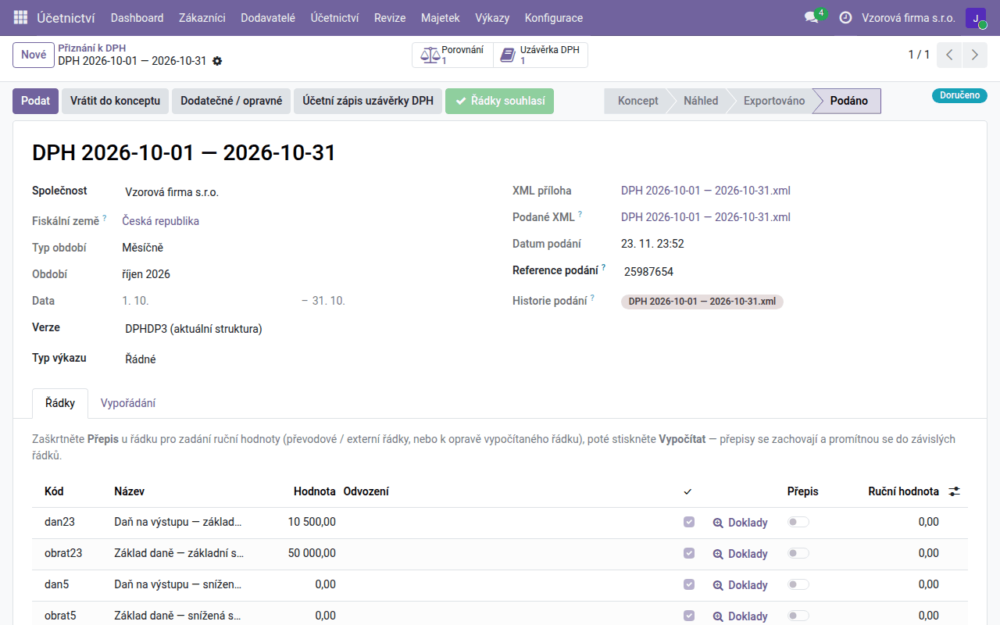
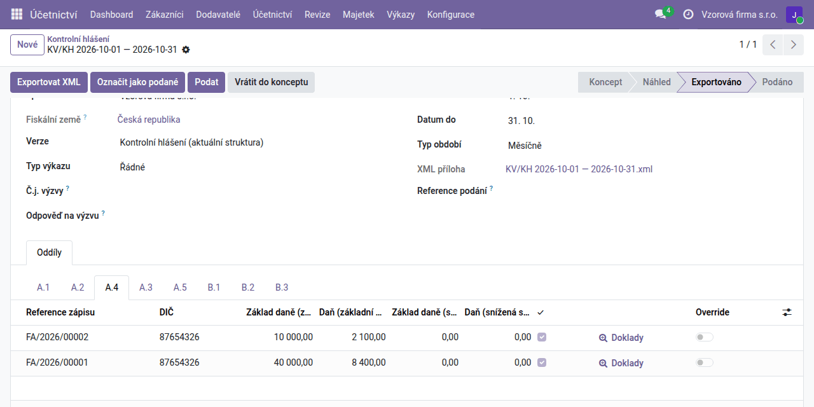
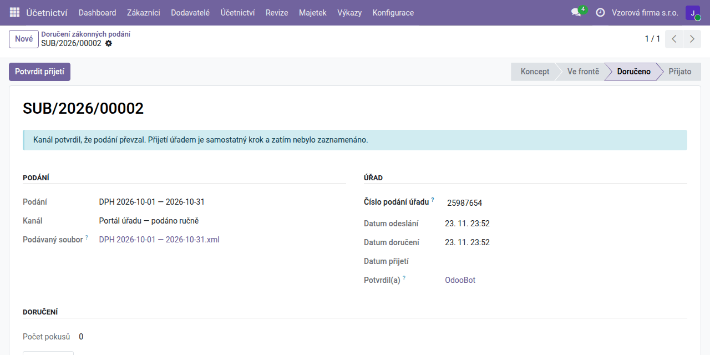
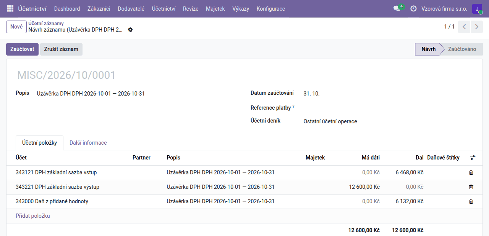

Návod k úloze
Měsíční uzávěrka DPH
Měsíční přiznání k DPH, kontrolní hlášení a souhrnné hlášení — výpočet, kontrola proti účetnictví, export XML, podání, účetní zápis uzávěrky DPH a uzamčení období.
| Země | Česko |
|---|---|
| Edice | Odoo Community |
| Zahrnuje | l10n_cssk_vat_return_base, l10n_cz_vat_return, l10n_cssk_kv_kh_base, l10n_cz_kh, l10n_cssk_ec_summary_base, l10n_cz_ec_sales, l10n_cssk_submission_base, l10n_cz_statutory, l10n_cz_epo, l10n_cz_datadance |
K čemu tento návod slouží
Návod prochází měsíční uzávěrku DPH tak, jak ji dělá účetní měsíčního plátce: vypočítat přiznání k DPH (formulář DPHDP3), kontrolní hlášení (DPHKH1) a souhrnné hlášení (DPHSHV), zkontrolovat je proti účetnictví, exportovat XML k podání, zaznamenat podání, zaúčtovat uzávěrku účtů 343 a uzamknout období.
Všechny tři výkazy jsou v Účetnictví → Výkazy → Zákonné výkazy. Doklady, ze kterých se počítají, popisuje Denní agenda; daně a fiskální pozice Nastavení předkontací.
Přiznání k DPH se podává do 25 dnů po skončení zdaňovacího období a lhůtu nelze prodloužit (§ 136 odst. 4 daňového řádu); právnická osoba podává ve stejné lhůtě za každý měsíc i kontrolní hlášení (§ 101e zákona o DPH).
Před první uzávěrkou
Jednou, před prvním podáním:
- DIČ společnosti — v údajích společnosti (Nastavení → Uživatelé a společnosti → Společnosti), spolu s názvem, adresou, telefonem a e-mailem. Hlavička XML je bere odtud.
- Finanční úřad — Účetnictví → Konfigurace → Nastavení, blok Česká / slovenská lokalizace, pole Výchozí správce daně: krajský finanční úřad (například Finanční úřad pro hlavní město Prahu), ne územní pracoviště. Bez něj se export zastaví.
- Kdo podepisuje a kdo podání sestavil — na formuláři společnosti, karta
EPO podání: oprávněná osoba a Sestavil. Hlavní činnost společnosti
podle CZ-NACE patří do pole NACE (main activity) na kontaktu
společnosti; přiznání bez ní hlásí EPO jako závažnou chybu. Viz
l10n_cz_statutory. - Účty uzávěrky DPH — v témže nastavení, blok Uzávěrka DPH: účet, na který se účty 343 převádějí (výchozí 343000 Daň z přidané hodnoty), účty zaokrouhlení (548000 a 648000) a tolerance zaokrouhlení. Prázdná pole znamenají tyto výchozí účty.
- Oprávnění — výkazy může připravit každý Hlavní účetní. Potvrzení podání vyžaduje roli Zákonná podání: podávat — nastavíte ji v Nastavení → Uživatelé a společnosti → Uživatelé, pole Účetnictví. Tato role obsahuje i práva hlavního účetního.
Které doklady do období patří
Přiznání k DPH nevybírá doklady podle jediného data:
| Strana | Doklad patří do období podle |
|---|---|
| DPH na výstupu (vystavené faktury, opravné daňové doklady) | DUZP |
| Odpočet DPH na vstupu (přijaté faktury) | data zaúčtování — období, ve kterém fakturu zaúčtujete a odpočet uplatníte |
| Účetní záznamy, banka, pokladna | data zaúčtování |
U české osnovy se datum zaúčtování faktury řídí jejím DUZP, dokud ho nezměníte. Chcete-li odpočet z přijaté faktury uplatnit v jiném období, než ve kterém ji účtujete, vyplňte na ní Deklarované období DPH; má přednost před datem zaúčtování.
Před výpočtem zkontrolujte, že je zaúčtována každá faktura s DUZP v daném měsíci a každá přijatá faktura, ze které chcete odpočet uplatnit.
Přiznání k DPH
Účetnictví → Výkazy → Zákonné výkazy → Přiznání k DPH → Nové:
- Typ období Měsíčně a Období — Odoo nabídne poslední ukončený měsíc a doplní data.
- Verze — DPHDP3 (aktuální struktura). Pro všechna období je verze jediná: Finanční správa přijímá každé přiznání ve struktuře platné v den podání.
- Typ výkazu Řádné.
- Klikněte na Vypočítat.
Přiznání přejde do stavu Náhled a karta Řádky vypíše každý řádek
formuláře s vypočtenou hodnotou. Kód je název řádku v XML pro EPO
(obrat23 a dan23 jsou základ a daň řádku 1) a Název jeho popis na
formuláři, nejkonkrétnější částí napřed (například Základ daně — základní
sazba — Dodání zboží nebo poskytnutí služby s místem plnění v tuzemsku).
Řádky jsou v pořadí formuláře.

U každého řádku:
- Doklady otevřou účetní položky, ze kterých je řádek vypočten — a odtud fakturu.
- ✓ je zaškrtnuto, když se řádek rovná součtu svých účetních položek. Zelené tlačítko Řádky souhlasí v záhlaví říká, že souhlasí všechny; jinak ho nahradí červené Nesouhlasící řádky a vypíše ty, které nesouhlasí. Rozdíl znamená, že DPH byla zaúčtována bez daňového štítku (například ručním zápisem na 343), nebo naopak.
- Přepis a Ruční hodnota — hodnotu řádku zadáte ručně; Vypočítat
přepis zachová a promítne ho do součtových řádků. Odpočet v krácené výši
a řádky 45, 52, 53 a 60 se nepočítají a zadávají se takto
(
l10n_cz_vat_return).
Karta Vypořádání ukazuje nadměrný odpočet z minulého období, zda ho převádíte (Převést nadměrný odpočet), a výslednou částku K úhradě / (vrácení) — řádek 64 (vlastní daň) nebo řádek 65 (nadměrný odpočet).
Když vše souhlasí, klikněte na Exportovat XML. Odoo soubor před uložením ověří proti oficiálnímu schématu Finanční správy, připojí ho k přiznání (pole XML příloha) a přiznání přejde do stavu Exportováno. Částky se exportují v celých korunách.
Kontrolní hlášení
Účetnictví → Výkazy → Zákonné výkazy → Kontrolní hlášení → Nové: Datum od a Datum do (první a poslední den měsíce), Verze Kontrolní hlášení (aktuální struktura), Typ výkazu Řádné, Typ období Měsíčně a Vypočítat.
Doklady se rozdělí do oddílů formuláře, každý na vlastní kartě:
| Oddíl | Co obsahuje |
|---|---|
| A.1 | vystavené faktury v režimu přenesení daňové povinnosti (§ 92a), s kódem předmětu plnění |
| A.2 | přijatá plnění, u nichž daň přiznáváte vy — pořízení zboží a služby z EU, služby ze zemí mimo EU |
| A.4 | vystavené faktury s českou DPH nad 10 000 Kč včetně daně, zákazníkům s českým DIČ |
| A.5 | všechny ostatní vystavené faktury s DPH, jedním součtem |
| B.1 | přijaté faktury v režimu přenesení daňové povinnosti (§ 92a) |
| B.2 | přijaté faktury s DPH nad 10 000 Kč včetně daně, pod číslem dokladu dodavatele |
| B.3 | všechny ostatní přijaté faktury s DPH, jedním součtem |
Každý řádek oddílů A.4 a B.2 nese DIČ partnera, číslo dokladu, základ a daň
v jednotlivých sazbách. Zákazník, který je plátce, ale skončí v A.5 místo
v A.4, nemá v Odoo DIČ — doplňte ho a vypočítejte znovu. Limit 10 000 Kč se
posuzuje na celém dokladu včetně daně a opravný daňový doklad se počítá
v absolutní hodnotě. Faktura bez DPH zákazníkovi z EU v kontrolním hlášení
není vůbec — patří do souhrnného hlášení. Jak se doklady do oddílů dostávají,
popisuje l10n_cz_kh.

Exportovat XML se zastaví a vyjmenuje chybné doklady, když řádek, který to vyžaduje, nemá DIČ, DUZP nebo (v A.1 a B.1) kód předmětu plnění.
Před exportem porovnejte součty s přiznáním: základy a daň oddílů A.4 + A.5 s řádky 1 a 2, oddílů B.2 + B.3 s řádky 40 a 41 a oddílu A.2 s řádky 3 až 6, 12 a 13.
Souhrnné hlášení
Souhrnné hlášení podáváte jen za měsíc, ve kterém jste dodali zboží nebo
poskytli služby plátcům v jiném členském státě (fiskální pozice
Intra-Community). Účetnictví → Výkazy → Zákonné výkazy → Souhrnné hlášení
→ Nové, období, Verze Souhrnné hlášení 2025, Typ výkazu Řádné
a Vypočítat. Řádky jsou seskupeny podle DIČ zákazníka a kódu plnění:
zboží (0), třístranný obchod (2) a služby (3). Jejich součet souhlasí s řádky
20 a 21 přiznání. Podrobnosti jsou v
l10n_cz_ec_sales.
Podání
Exportované XML podejte na portálu Finanční správy MOJE daně (aplikace EPO: načtení souboru, kontrola a odeslání) nebo datovou schránkou. Poté v Odoo zaznamenejte, že bylo podáno:
- Na přiznání (a stejně na kontrolním a souhrnném hlášení) klikněte na Podat. Otevře se seznam podání výkazu — záznamů o jeho podáních; klikněte na Nové.
- Kanál ponechte na Portál úřadu — podáno ručně, do pole Číslo podání úřadu zadejte podací číslo z portálu a klikněte na Potvrdit podání. Podání přejde do stavu Doručeno, přiznání do stavu Podáno a historie zaznamená, kdo podal.
- Až Finanční správa podání potvrdí, přiložte potvrzení na kartě Potvrzení a klikněte na Potvrdit přijetí.

Označit jako podané udělá totéž bez otevření podání — na pozadí se vytvoří podání ve stavu Koncept, aby bylo kam přiložit potvrzení. Všechna podání jsou v Zákonné výkazy → Doručení.
Místo ručního nahrání souboru umí kanál EPO — Finanční správa (podepsané,
přímo) výkaz podepsat kvalifikovaným certifikátem společnosti a odeslat do
EPO přímo z Odoo — nejdřív v testovacím režimu tlačítkem Zkontrolovat
v EPO, poté naostro. Nastavení popisuje
l10n_cz_epo.
Účetní zápis uzávěrky DPH
Během měsíce je DPH na analytických účtech 343 podle sazby a směru (343121 vstup a 343221 výstup v základní sazbě). Na exportovaném nebo podaném přiznání klikněte na Účetní zápis uzávěrky DPH: Odoo připraví návrh zápisu k poslednímu dni období, který je převede na zúčtovací účet. Zkontrolujte ho a zaúčtujte.

| Doklad | Účet | MD | D |
|---|---|---|---|
| Uzávěrka DPH (interní doklad) | 343221 DPH základní sazba výstup | 12 600 | |
| 343121 DPH základní sazba vstup | 6 468 | ||
| 343000 Daň z přidané hodnoty | 6 132 | ||
| Úhrada finančnímu úřadu (bankovní výpis) | 343000 Daň z přidané hodnoty | 6 132 | |
| 221004 Fio banka | 6 132 |
Po uzávěrce je zůstatek účtu 343000 vlastní daň z řádku 64 (na straně MD při nadměrném odpočtu, řádek 65). Malý rozdíl v mezích tolerance, vzniklý zaokrouhlením přiznání na celé koruny, jde na 548000 nebo 648000; větší rozdíl uzávěrku zastaví — přiznání pak nesouhlasí s účetnictvím a je třeba najít příčinu (viz tlačítko Nesouhlasící řádky na přiznání).
Úhradu na výpisu spárujte ve Spárovat na kartě Ruční operace s účtem 343000 (Bankovní účty).
Uzamčení období
Po podání nastavte Datum uzamčení DPH v Účetnictví → Účetnictví → Data uzamčení na poslední den měsíce. Odoo pak odmítne zaúčtovat nebo změnit cokoli, co by změnilo DPH podaného období (Uzavření období). Faktura, která přijde později, se zaúčtuje do otevřeného období.
Opravy po podání
Chyba v podaném přiznání se opravuje novým přiznáním: na podaném přiznání klikněte na Dodatečné / opravné. Vytvoří se nové přiznání za stejné období, navázané na původní:
- Opravné — před uplynutím lhůty pro podání; nahrazuje původní.
- Dodatečné — po lhůtě; vyžaduje Důvody zjištěny dne a podává jen rozdíly oproti přiznání, které opravuje.
Na kontrolním hlášení je to tlačítko Opravné / následné: opravné hlášení nahrazuje původní před uplynutím lhůty; následné po ní opakuje všechny údaje období s provedenými opravami a potřebuje Důvody zjištěny dne nebo, odpovídá-li na výzvu správce daně, Č.j. výzvy. Následné souhrnné hlášení obsahuje jen změněné řádky. Před opravou posuňte datum uzamčení DPH zpět a po zaúčtování opravného dokladu ho vraťte.